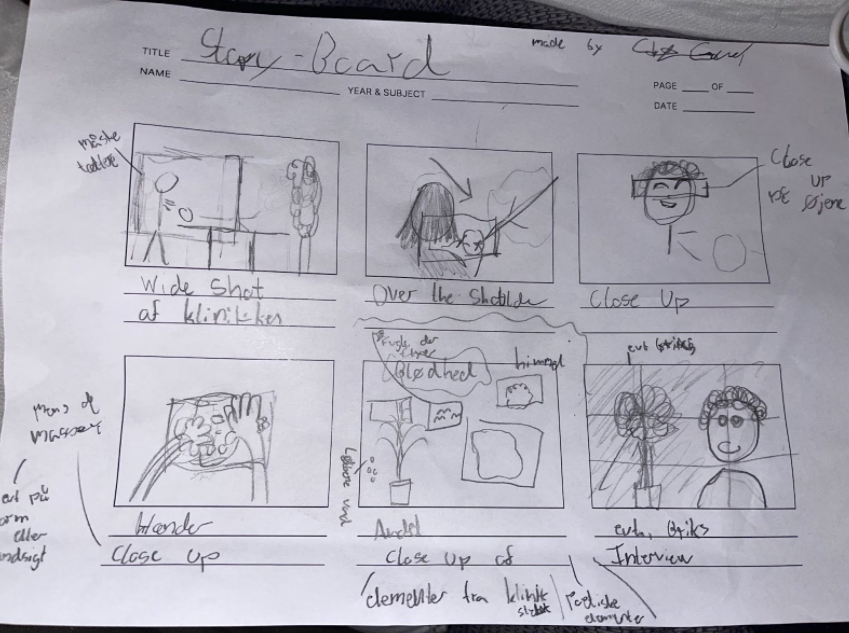
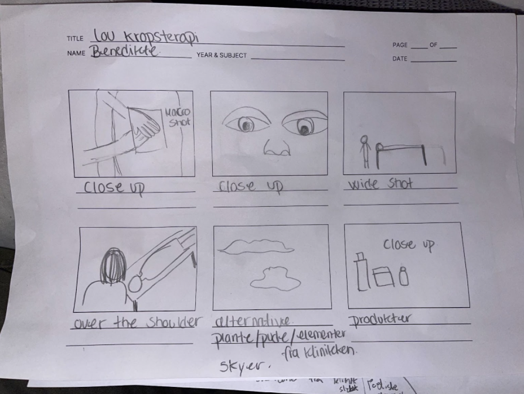
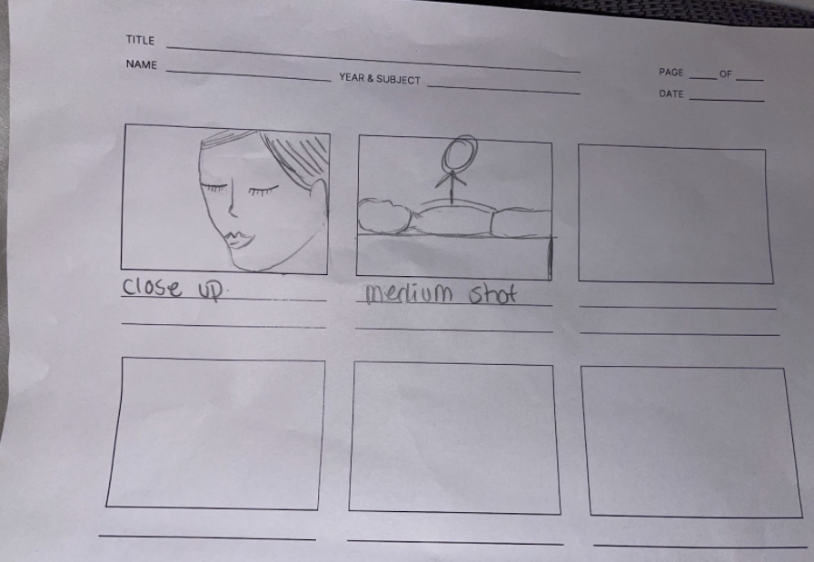
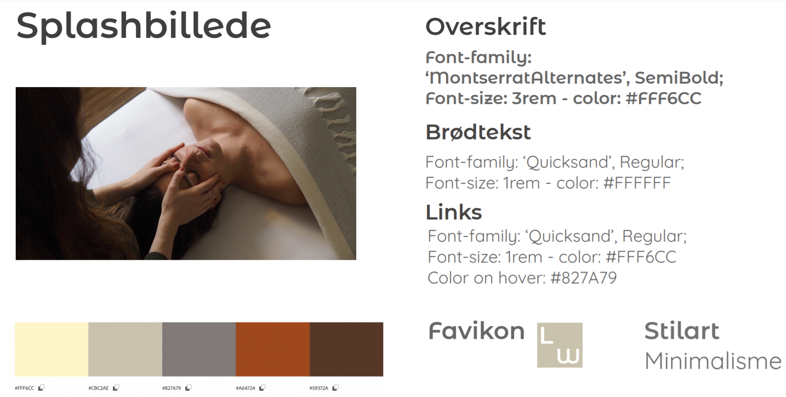

Portfolio Eksamen
sandra han

Til denne opgave var det færdige produkt en video og en hjemmeside. Selve formålet med teamet var at lære at producere en video. Til denne tilhørte både filmning, lydoptagelse, redigering af begge i Premiere Pro og audition og derudover at arbejde og kommunikere med kunder. Denne opgave var en gruppeopgave, dermed hørte læren af samarbejde og kommunikation også indenunder.
Min gruppe og jeg valgte at samarbejde med Louise Wilma som primært er kropsterapeut men også yogainstruktør og sexolog. Fordi at Louises arbejde handler meget om hende og hvordan hun behandler valgte vi at lave en video som primært fokuserede på hvem Louise er som person og secondært om hvad kropsterapi er. Derudover lavede vi en hjemmeside som er med til at afspejle Louise og hendes arbejde, hvor det også er muligt at booke tid.
Inden interviewet til videoen var det vigtigt at have spørgsmål klar, hertil blev vi lært i hvordan man stiller de gode spørgsmål. Derudover blev vi introduceret for forskellige klippeteknikker, dramaturgi, videointerview, storyboard og 5-skuds-reglen. Dette brugte vi til overvejelsen af hvordan vi ville filme vores video. 5 skuds reglen hjalp til hvilke vinkler der er gode at filme fra og hvorfor. Dem brugte vi som man kan se i vores storyboard og i selve videoen.
Vi fik lov at filme og redigere en 1 minuts video som øvelse i programmerne. Dette var en mindre opgave, men den gav en fornemmelse af hvad det ville sige at skulle producere en video, hvilket bliver meget vigtigt senere i større sammenhæng og eventuelt arbejde.
Som forberedelse til vores video lavede vi et storyboard over hvordan interviewet skulle filmes og hvilke b-rolls vi ville filme og fra hvilke vinkler. Dette gav et overblik over hvad og hvordan vi ville filme. En ting vi ikke havde i mende inden vi tog hen for at filme var belysningen. Dette skulle vi have undersøgt inden i forhold til om vi skulle have kunstig belysning eller blot filme tidligere på dagen. Heldigvis fik vi dette løst ved hjælp af lamper og stearinlys som gav en naturlig varm belysning som passede perfekt til Louise og hendes erhverv.
  Inden at vi begyndte at filme sørgede vi for at Louise skrev under på et dokument hvor hun giver os tilladelse til at bruge det content vi tager af hende. Dette er en god ide, så man er sikker på ikke at få problemer senere, i forhold til brug af billeder og videoer.
Det første vi valgte at gøre inden dannelse af hjemmesiden var at lave en BERT test på Louises daværende hjemmeside. Hertil sagde brugeren at hjemmesiden manglede identitet, at billederne ikke passede til indholdet og at informationerne var dårlige. Men brugeren sagde tilgengæld også at hjemmesiden virkede af høj kvalitet, hvilket giver god mening da det er et skilet lavet af professionelle som man kan bruge. Ud fra testen fandt vi ud af hvad vi skulle fokusere på ved dannelse af den nye hjemmeside.
Vi lavede en tænke højt test på den gamle hjemmeside. Her sagde brugeren det samme som BERT resultaterne. Pæn hjemmeside, men ikke særligt struktureret og der mangler mange informationer, og derudover meget upersonlig.
Ud fra flere samtaler med Louise, i forhold til design af hjemmesiden, sammensatte vi 4 stytiles. Her gav vi Louise mulighed for at vælge og eventuelt komme med forslag til ændringer, og vi kom frem til det endelige resultat. Louise havde nogle personlige preferæncer i forhold til farver og fonte som var ret forskellige fra vores. Hertil sørgede vi for at have god kommunikation med hende, vi kom frem til et godt resultat så hun som kunde var tilfreds.
Louise fortalte at hun gerne ville have en meget simpel hjemmesiden, så vi gik med et minimalistisk design. Herudfra lavede vi en løsning på et wireframe.
Ud fra vores wireframe lavede vi en prototype i Adobe XD hvor det var muligt både at se design af hjemmesiden med farver men også at kunne trykke rundt på hjemmesiden.
Storyboardet var med til at give et overblik over hvilke shots vi skulle have og fra hvilke vinkler så man ikke skal huske dem eller stå i situationen og finde ud af det. Efter fik vi redigeret både lyd og video i premiere pro og audition som gjorde at vi kunne optimere vores evner i programmerne. Her fjernede vi støj og unødvendige lyde. Og sørgede for at de forskellige klip havde ordenligt lys og hvis der eventuelt skulle redigeres i hastighed osv. Derudover fik vi også øvet klipning af videoen. Hertil havde vi lavet øvelser hvor vi fik afprøvet stort set det hele i begge programmer. Vores færdige video var kort og simpel og kom rundt om Louise som person og hendes erhverv.
Ud fra vores forskelige test, kunne vi bruge resultaterne til at vide hvad der skulle forbedres og hvad der skulle beholdes til den nye hjemmeside. Det færdige styletile brugte vi til at skabe et overblik over designet af den nye hjemmeside, for at sikre kontinuitet og skabe genkendelige elementer så hjemmesiden ville være nem at finde rundt i. Vores wireframe skabte et overblik over hvor de forskellige elementer skulle placeres og bare i det hele taget et godt udgangspunkt for opbyggelse af hjemmesiden, især når man arbejder flere sammen, så er vi alle enige om hvordan hjemmesiden skal bygges op. Prototypen lavet ud af fra ovenstående wireframe viste hvordan hjemmesiden ville se ud hvis vi satte det hele sammen. Dette var en stor fordel da prototypen giver os hjemmesiden foran os så vi kan vurdere om den fungerer eller om noget skal ændres, fjernes eller tilføjes. Derudover kunne vi også vurdere om hjemmesiden var nem at finde rundt i da prototypen var klikbar.